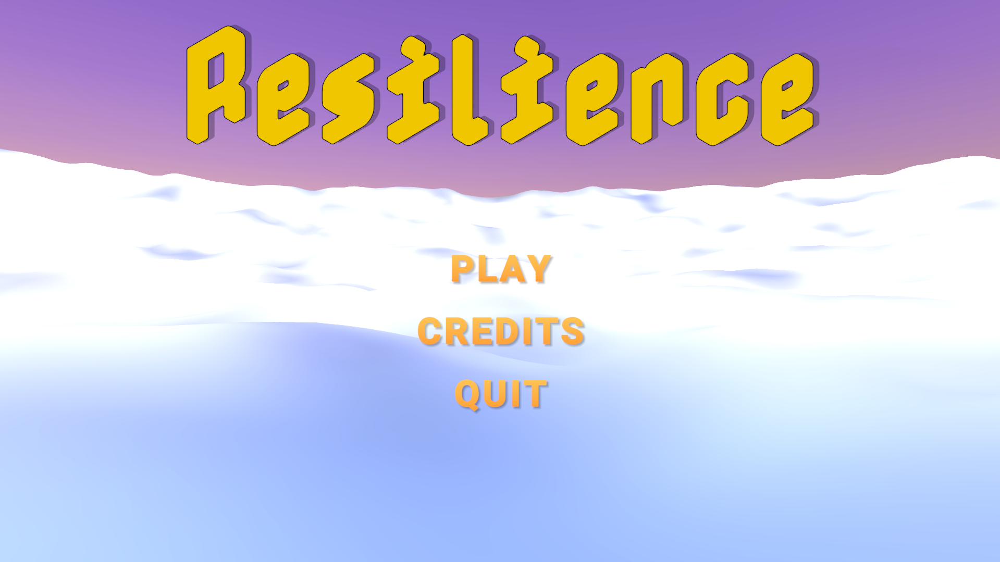
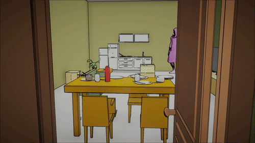
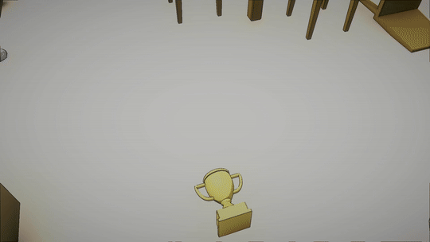

Resilience
Gameplay Programming / Tech Art / Project Manager

📅 Duration
10 days
👥 Team
5 people
🛠️ Technologies
Unity, C#
📖 Description
Resilience is a game developed for Ubisoft’s Volunteer Game Jam. The player wakes up trapped inside a small, cluttered apartment. A mysterious entity accompanies them and gives a seemingly simple task: find certain objects, organize them, or throw them away. As the player explores, these objects gradually reveal that they belong to the character and carry a strong emotional weight. Each choice becomes more than a simple mechanical action, hinting at a quiet and intimate story hidden within the walls of the apartment. By putting things back in order, the player does more than just transform the space, they take part in an inner journey, leading to a key moment where the door finally opens, leaving behind what once kept the character trapped. Resilience is a project I worked on as a Gameplay Programmer and Technical Artist.
🎯 My role
- Gameplay Programmer
- Technical Artist
- Project Manager
⚡ Challenges
The main challenges were to create a non-Euclidean space effect to trap the player inside the apartment. Each time the player tries to leave by opening the door, they find themselves back inside the apartment. Another challenge was implementing an object inspection system.
🎯 Challenge: Creating a sense of confinement
How can we create a feeling of confinement, as if the player were in a dream? The main difficulty was ensuring that the player could not leave the apartment before solving the puzzles. Each time the player opens the door, they are brought back into the apartment.
👉 Solution : I created a non-Euclidean space effect using a shader applied to a textured plane acting as a portal. The shader uses a secondary camera that simulates what the player sees through the portal. This camera mirrors the player’s position along the Z-axis and their rotation along the Y-axis. Creating the illusion of looking through a portal to another space (in this case the apartment).
💡 What I would improve : With more time, I would refine the transition when passing through the portal to make it smoother and more immersive.

🎯 Challenge: Finding clues on objects
To solve puzzles the player need to take objects and inspect them for clues.
👉 Solution : I developed an object inspection system allowing the player to pick up and rotate objects freely. When a clue is discovered, a sound cue is triggered along with a ripple visual effect. The system is based on a raycast from the center of the camera. When it hits an object, the object is displayed in front of the player. It is rendered using a secondary camera with camera stacking to prevent clipping issues with the environment.
💡 What I would improve : I would make clue discovery more intuitive by adding visual indicators on objects to highlight the location of clues.

Gallerie